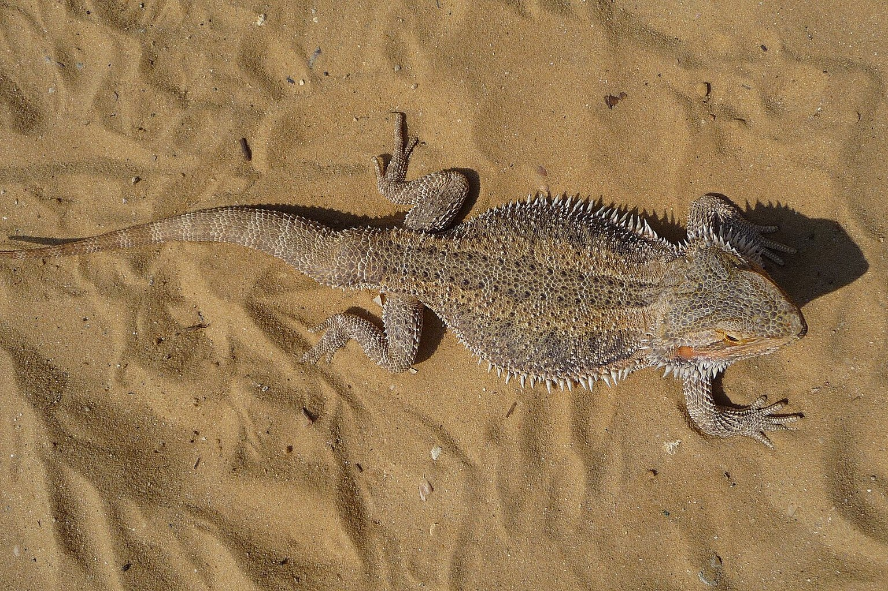

Bearded Dragon Brumation: How to Tell a Normal Slowdown From a Sick Lizard
A bearded dragon that sleeps for ten weeks is following the season. One that sleeps at the wrong temperature is dying slowly, and from outside the glass the two look identical.

A bearded dragon coming out of brumation at 22 °C (72 °F) is not asleep, not hibernating and not quite awake — it is a reptile running on a metabolic discount, and that is the window where liver disease, impaction and infection all hide behind the same behaviour. The animal sits on the cool side, refuses food, eyes half-closed, and every keeper who has lost one knows the same sick feeling: was this the season, or was this the thing that killed it?
Brumation is not true hibernation. There is no deep torpor, no near-freezing body temperature. In Pogona vitticeps it is a graduated slowing — appetite down, movement down, basking time down — triggered by shortening photoperiod and falling ambient temperature rather than any single switch. What makes it dangerous to diagnose is that almost every serious illness in this species produces the same three signs. The trick is not learning what brumation looks like. It is learning which measurements change when a dragon is merely slow and which change when it is sick.
The autumn I nearly buried a healthy lizard
October, sixth year of keeping. My adult male — Brick, to the household — stopped eating on a Tuesday. By Friday he had moved from his basking slate to the cool corner and stayed there, flat, chin down. I did the wrong thing twice. First I panicked and cranked the basking lamp up, which pushed his slate to 46 °C. He moved further away. Then I decided he was sick and booked a reptile vet for Monday.
Sunday night I found him under the cool hide at 21 °C, eyes shut, breathing about four times a minute. The vet weighed him, felt his coelom and asked one question I had not answered: what did he weigh in September? 512 g in mid-September, 498 g that night. That is 2.7 %. She said what I now say to every keeper who emails: under 5 % lost and he is probably brumating; 10 % lost and he is probably sick. £180 for the answer that I had done nothing wrong except frighten myself.
What brumation actually does inside the animal
The mechanism matters because it tells you which failures are possible. Brumation is a state of reduced metabolic rate driven largely by temperature — a Q10 effect, meaning that for every 10 °C drop in body temperature, most of the animal's chemical processes slow by a factor of roughly two to three. Digestive enzymes, immune response, gut motility and wound healing all slow with it. A dragon brumating at 22 °C is not digesting food at all; its stomach is a cold cupboard.
Food in a cold gut does not move and does not break down. It ferments, it draws fluid, it becomes an impacted mass. This is why the single most important rule in brumation is that the gut must be empty before the animal cools — typically a two-week wind-down with food withdrawn but heat and light still on, so the last meal is fully passed before the temperature drops. Skip the wind-down and you have not put a dragon to sleep. You have put a dragon's last meal in a cold, still place and left it there.
The immune system is the second thing that slows. A dragon brumating with a low-grade infection will often look no worse than a healthy one until it warms up, and then the thing held in check by nothing much presents all at once. That is why keepers report "fine all winter, collapsed in March." The collapse did not begin in March.
Reading the signs: a comparison you can act on
This is the table I wish I had owned in year six. Every row is something you can observe or measure at home. Weigh monthly, same time of day, before feeding.
| Sign | Brumation (normal) | Sick (needs a vet) |
|---|---|---|
| Weight change over 4-6 weeks | 0 to 5 % loss, then stable | More than 10 % loss, still falling |
| Body temperature chosen | Rests at 22-26 °C, will move to bask | Stays at 18-20 °C whatever heat is offered |
| Response to handling | Sluggish but alert, righting reflex intact | Floppy, no righting reflex, head lolls |
| Skin turgor | Pinched fold springs back immediately | Fold stays tented for a second or more |
| Stool | Last stool passed before cooling | Blood, undigested stool, or none for a month |
| Basking behaviour | Short basks, 30-60 minutes | None, or constant basking with no appetite |
Setting the brumation environment
Most keepers who try to mimic a Burra winter overcorrect. A working brumation for a healthy adult runs a basking spot at 30-32 °C for a short window each day, ambient at 20-24 °C, cool end near 18-20 °C, with photoperiod cut from the summer 14 hours to 6-8 hours over a three-week ramp. The numbers matter less than the gradient: the dragon must be able to choose. A single-temperature box is not brumation, it is refrigeration.
Two instruments earn their keep. An infrared thermometer reads the surface temperature of the basking slate rather than the air two feet above it — the difference can be 8-10 °C, and dragons bask on surfaces, not air. A second digital thermometer at the cool end reads what the animal actually sits in when it chooses to be left alone. What breaks first when wrong, in order:
- Cool-end floor: 18-20 °C. Below 16 °C, immune function is depressed enough that carried infections become disease. Above 26 °C, the metabolic savings are gone and the animal is just off its food.
- Basking surface: 30-32 °C for part of the day. The dragon needs it to shift a stuck meal and to mount an immune response.
- Photoperiod: 6-8 hours at depth, ramped over three weeks each way. Do not snap it.
- Water: a shallow dish, refreshed daily, throughout. Brumating dragons drink little but they do drink.
The easiest way to hold a slow ramp and a gradient you can trust is to put the heat source on a thermostat you can read from the wall and run the UVB on the same timer, so warmth and light arrive together. A dragon with those out of step behaves as though permanently jet-lagged.
Juveniles, adults and the ones to keep warm
Here is where the dangerous advice circulates. Brumation is not mandatory. A juvenile under 12 months, or under roughly 30 cm snout-to-vent, should generally not be brumated at all — growth rate and bone density depend on steady heat and UV, and a growing animal that slows down is usually slowing down because something is wrong. In that class, treat sustained anorexia as a veterinary question first.
Adults can be, and many keepers including me do it because it seems to suit breeding condition. Three categories are excluded regardless of season:
- Underweight animals. No fat reserves to live on through the slow months. Put weight on first, brumate next year.
- Animals with a current or recent problem. Mites, a healing wound, respiratory illness in the last two months, recent treatment. Keep them warm and let the immune system work.
- Animals with no weight baseline. Without a recent weigh-in you cannot tell brumation from illness. Weigh first, decide second.
Females carry a fourth complication: a female coming out of brumation can ovulate within weeks, and one that went in thin comes out depleted and then spends what she has left on eggs. Weigh breeding-size females monthly through spring, not just autumn.
What actually looks like brumation and isn't
Four conditions present almost identically. Impaction — a gut loaded with substrate or undigested food — produces lethargy, no appetite and a drop off the basking spot as the animal gives up. The differentiator is the abdomen: firm, distended, and no stool. Brumation does not stop stool; it stops new stool being produced. Three weeks with nothing passed but otherwise stable is probably brumation. Three weeks with nothing passed, hard to the touch, pressing its belly down — that one needs a vet.
Respiratory infection shows as an upward tilt of the chin, a bubbly click on the breath, or discharge at the nostrils. A brumating dragon breathes slowly and silently; a sick one makes a noise. Listen from 30 cm.
Dehydration mimics the shutdown best and gets missed most. Sunken eyes are normal in a healthy brumating dragon. Sunken eyes plus tented skin plus no drinking is not. Drip water on the snout every few days; a dragon that wants it will lick.
Early metabolic bone disease from inadequate UVB shows as lethargy, weak hind legs and, later, a rubbery jaw. Most tubes lose useful output within 6-12 months while still glowing. If you cannot remember when you replaced it, replace it.
Where the evidence thins is the fine detail: how deep, how long, and whether brumation benefits a healthy adult at all. The clinical consensus on the broad strokes is solid — empty gut, real gradient, weight monitoring, no brumating of sick or juvenile animals — while optimal depth and duration are still argued over by a degree or two and a few weeks. Experienced keepers err shallow, 20-22 °C rather than 16 °C, because a slightly warm brumation is not dangerous and a slightly cold one is.
What no argument survives is skipping the baseline. A kitchen scale that reads to the gram, once a month, written down. That number is what tells you in March whether the animal in front of you is fine or fading. Everything else is guesswork dressed as husbandry.
Frequently asked questions
My dragon stopped eating in November and sits in the cool corner — is that brumation?
Probably, but you cannot be sure without a baseline weight. Weigh it now and again in a fortnight. Under 5 % lost, righting reflex intact, eyes sunken but responsive, sleeping spot stable: normal slowdown. Over 10 % lost, floppy, or skin staying tented after a pinch: vet within the week.
Do I need to brumate my bearded dragon at all?
No. It is not required for health or longevity, and many keepers hold adults at steady temperature and light all year with no harm. If you do brumate, do it with an empty gut, a real gradient and a baseline weight. If you do not, expect some seasonal slowing and watch the same signs.
How cold should the cool end go, and for how long?
Cool end 18-20 °C, basking surface available at 30-32 °C, photoperiod cut to 6-8 hours at depth, ramped three weeks in and three weeks out. Warmer than this is safer than colder. Below 16 °C immune function is depressed and you are gambling with an infection you cannot see.
What we actually use
Two pieces of equipment that do most of the work in a Bearded Dragon setup. Nothing here is here because a brand asked.
-
Check price on AmazonHabitat & Decor
UVB + Heat Lamp Fixture Combo
A brumating dragon still needs its UVB reviewed; a tube past its service life is a common winter mistake.
Typical price $45–75 -
Check price on AmazonHabitat & Decor
Infrared Thermometer Gun
Basking spot measured on the surface the lizard actually uses, not the air above it.
Typical price $18–30
Links open Amazon in a new tab. We do not set or track prices.
Affiliate disclosure. As an Amazon Associate, we earn from qualifying purchases. Every card in this guide is an affiliate link — it costs you nothing, and we only list gear we have run in our own enclosures.